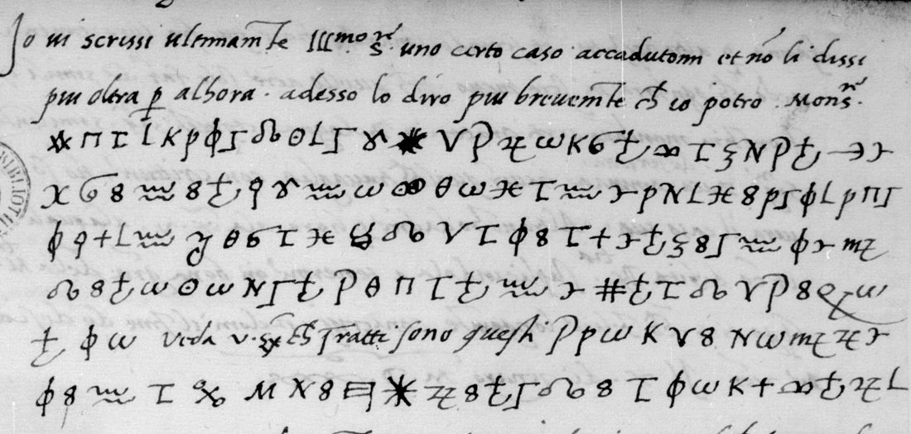
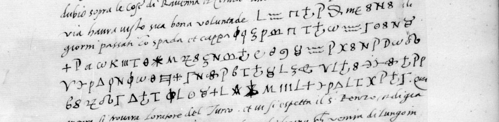

At a glanceCiphertext-only break · partial (93% of the cipher)
- The letters
- Count Guido Rangone, a condottiere in French service, to the Grand Master Montmorency, from Venice: 24 December 1529 and 10 January 1530. Both switch into cipher for a few lines.
- Where
- BnF Français 3070 f. 81r (DECODE R4249, seven cipher lines, no decipherment) and Français 3082 f. 42r, which DECODE does not have. Each has a Clairambault copy.
- The cipher
- A homophonic simple substitution without word division: 264 signs of 54 kinds, one null, no code signs for names.
- How it was read
- No key survives, so it was recovered from the ciphertext alone: simulated annealing against a sixteenth-century Italian letter model, 40 long runs, then hand corrections. 245 of 264 signs give sense.
- What it says
- Both passages concern Cesare Fregoso, who had just married Rangone’s sister and was made governor of Verona that January; one gives “malissimo satisfato di lui”.
- Still open
- A1 and A2 (one sign twice), A6 (12 signs, no corpus match), B3 (de [?]en) and B4 (one sign) stay open; the signs occur once and there is no more ciphertext.
01 The letters
Count Guido Rangone (1485–1539), a condottiere from Modena in French service, spent the winter of 1529–30 in Venice after the defeat at Landriano. He wrote to the Grand Master, Anne de Montmorency, in Italian, mostly in clear: news of the Peace of Bologna, the Duke of Urbino, the Turkish envoy, the Swiss and Grisons going home. Twice he switched to cipher.
- 24 December 1529, Français 3082 f. 42r, no. 19 (Gallica view 65). Five lines of cipher after the passage on Ravenna and Cervia, which Venice was handing back to the Pope. Copy: Clairambault 330 f. 206, headed “Vol. 143 fol. 42”.
- 10 January 1530, Français 3070 f. 81r, no. 40 (DECODE R4249). Seven lines of cipher after “adesso lo dirò più brevemente che io potrò. Mons.r”, broken by the clear words “vida V. Ex. che tratti sono questi”. Autograph signature “S.re Guido Rangone Co.”. Copy: Clairambault 331 f. 15, headed “Vol. 134 fol. 81”.
Neither copy has a decipherment. Four other Rangone letters from Venice in 1529–30 (Français 3012 no. 44, 3013 no. 19, 3034 no. 18, 2980 no. 44) were checked and are in clear. The ciphered letter of Joachin de Vaux from Ferrara, March 1529, in Français 3012 uses a different sign set.

02 The cipher
A homophonic simple substitution without word division. Vowels have two to eight signs each (e: ω, P, ∞ and two stars; a: ɪ, ʃ, Ȥ; o: 8 and ϙ), consonants one to three (n: K, ᏕᏏ, ㅌ; l: ≈, ξ, ✡). One sign is a null: it stands inside the name Fre·goso. No code signs for names were found. This is the ordinary Italian design of the 1520s, with more homophones than the ciphers of Visconti or Bizozola from the same campaigns. The key is in targets/rangone1530/key.json.
Three pairs of look-alike signs turned out to be different signs and had to be separated: a capital Θ (t) against the narrow θ (i), a “∋” with a leading dash (u) against the plain one (i), and two blotted stars.
03 The letter of 24 December 1529

Clear text in roman, the decipherment in bold; [?] marks signs not deciphered.
… ancora che la recuperi per questa altra via, haura visto sua bona voluntade il Fregoso li giorni passati con spada et cappa tolse fare la cosa de [?]en; mai più [v]olse r[? ? ?]a le cose ben disposte in casa, e harà il f[?] da rovi[n]are; e ho una pratica di lei [che] mi dispiacerà. Qui ancora si trovarà l’Orator del Turco …
“… will have seen his good will. Fregoso, these past days, ‘with sword and cloak’, took it on himself to do the business of [?]; never again did he want [?] the things well arranged in the house, and he will have the [?] to ruin [?]; and I have a negotiation concerning her [or: Your Excellency] which will displease me.”
Fregoso had commanded Ravenna and Cervia for Venice since September 1528, the towns the clear sentence before the cipher is about. Con spada et cappa means in person and without ceremony. The word after “la cosa de” has one sign not deciphered. Fregoso’s old enterprise against Genoa would give de Gen[ova], cut short, and de ben fits as well.
04 The letter of 10 January 1530
Io vi scrissi ultimamente Ill.mo S.re uno certo caso acaduto mi et non li dissi più oltra per alhora; adesso lo dirò più brevemente che io potrò. Mons.r ’l fa instantia [a m]e de ven[i]re al servicio loro, o[?] le mie … malissimo satisfato di lui; ha mandato a dirlo al [s]ignore Cesare e farli grande oferte. Vida V. Ex. che tratti sono questi, essendo seguito la [?]icon[p]uorano a[t]tenderui. Hora lassamo andare questi mei particulari …
“My Lord, he urges [me] to come into their service … is very ill satisfied with him; he has sent to tell it to Signor Cesare and to make him great offers. See, Your Excellency, what treatment this is, it having followed [?] …”
In January 1530 the Venetian Senate appointed Cesare Fregoso military governor of Verona with 2,500 ducats a year (Dizionario Biografico degli Italiani, “Fregoso, Cesare”). He had married Rangone’s sister Costanza that autumn. The cipher is Rangone’s complaint that the Republic was courting his brother-in-law while it treated him badly, the “certo caso” of his previous letter. In October 1530 the French in turn dismissed Rangone over his protests at a cut in his pension.
05 How the key was recovered
- Both originals and both copies were transcribed sign by sign (
cipher.txt): 264 signs, flat top frequencies, so homophonic. - Simulated annealing of the sign-to-letter map against the
it-cinquecentofive-gram model, with a letter-frequency penalty. Short runs gave pseudo-Italian and no two runs agreed. The clear text of the same letter scores −1.72 per five-gram, the runs −2.3. The search had failed; the model was adequate. - An incremental annealer, 40 restarts of two million moves each. One restart reached −1.97 and gave real words and the name Fregoso. Every perturbed restart from that key went back to it.
- A sensitivity table: 35 signs are fixed by the text with margins of 6 to 85 log units; the others occur once or twice.
- Corrections from the words: б = h (ha mandato, e harà, ho una), the tailed sign = f (oferte), D = b (ben disposte), the null, and the three split pairs.
- Word-aware scoring of the remaining signs, singly and in pairs, under a spaced language model. No value won by more than noise, so they stay open.
06 What remains open
- Measured by words, 24 October 2026. The written-out reading of f. 81 (passage B, 10 January 1530) builds coherent sentences but reads at 91.5% of its words, with the open and doubtful words as holes: under the 95% a complete reading needs.
- Re-measured 5 October 2026. A sign counts only inside a word with no open sign that occurs at least three times in the Cinquecento corpora: passage A 134 of 149 (89.9%), B 111 of 115 (96.5%), together 245 of 264 (92.8%). The open runs were re-read from the Gallica natives (fr. 3070 view 127): in B3 the sign d is a cursive theta, i, and volse r?i?a is volse ruina[r] le cose ben disposte in casa. Open: A1 and A2, the same sign y twice (3 signs); A6 la [xo]icon puorano (12 signs, no corpus match for any value; the block that keeps the letter under 95%); B3 de [a]en (ben or Gen[ova]); B4 one sign with a back-loop.
- A1–A2: “instantia [a m]e de ven[i]re” and “o[?] le mie”. The sign ɤ occurs twice. In A1 the two signs after instantia (ɤ and a blotted star found only here) are taken as me from the context, grade I: the clear sentence before the cipher speaks of “uno certo caso acaduto mi”, a case that happened to the writer, and the a of a me is taken as written once with the last letter of instantia (30 September 2026; earlier versions printed an unbracketed a that is not in the cipher). In A2 ɤ = m gives om le mie, and no single letter makes Italian of oɤle mie; the annealer’s “b” fits neither place. The A2 sign stays open.
- A6: “la [?]icon[p]uorano”, 12 signs. One sign occurs only here and the run has no parallel.
- B3: “de [?]en” and “volse r[? ? ?]a”, 9 signs occurring once each; several words fit.
- B4: “il f[?] da rovi[n]are”, 2 signs.
- Decipherments that assume an encipherer’s slip: ven[i]re (the h sign for i), al [s]ignore (ɸ t for ρ s), Cesare e (θ i for e), rovi[n]are.
These are blocked by length: the two passages are all the known text in this cipher.
Full texts
The transcription and the decryption of every document on this page, so that the reading can be used and checked. Short files are shown here; all are in the repository.
A. BnF fr. 3070 f. 81r, Venice, 10 Jan 1530 read in part
Guido Rangone to Anne de Montmorency: in cipher, that Venice pressed him to enter its service, then sent word to 'Signor Cesare' (Cesare Fregoso, Rangone's new brother-in-law) and made him great offers while Rangone was slighted. The clear rest is news of Venice (the Duke of Urbino, the Turkish envoy, Milan, the Swiss, Genoa's galleys). Section A of reading.md; cipher lines A1-A6 of cipher.txt.
Builds coherent sentences, but under the read bar of 95% of words read as sense (92% here); the holes are marked in the reading.
Transcription
# Guido Rangone cipher. One token per sign, ASCII aliases (see NOTES.md, Sign aliases). # '|' = clear text interrupts. Lines prefixed with the witness and line. # A = BnF fr. 3070 f. 81r (original, DECODE R4249), Venice 10 Jan 1530; Clair. 331 f. 15 = 18th-c. copy. A1: hex pi I l k p phi J ob Th L J y S V P Z w k 6 t oo I xi N P t E r A2: x G 8 W 8 t q y W w oc theta w X I W r p N L X 8 p J phi L p pi J A3: phi q + L W g theta 6 I X U ob V I phi 8 I + r t xi 8 J W phi r m A4: ob 8 t w O w N J t P theta pi I t W r # t I ob V P 8 e w A5: t phi w | P p w k V 8 N w m Z r A6: phi 8 W I xo M x 8 B A Z 8 t J ob 8 I phi w k + oo t Z L # B = BnF fr. 3082 f. 42r (original), Venice 24 Dec 1529; Clair. 330 f. 206 = 18th-c. copy. B1: L W pi t P vt m 8 N 8 B2: phi q xi p oo pi I t w W J O 8 N U B3: + P a w k iii I theta A M Z 8 xi N oo t c d 9 U W P x 8 N P D w ob B4: V E2 p D2 q N phi w theta B dv J N U P 6 I t U L xi e V I t 8 E r U t P P B5: 6 8 Z ob J D2 t I phi L O U + L hex S2 M iii L + r p D2 L I x P t J
Decryption
# Reading: Guido Rangone to Montmorency, Venice, 24 Dec 1529 and 10 Jan 1530
Key: `key.json` (sign → letter), rebuilt here ciphertext-only (see NOTES.md). Signs as in `cipher.txt`.
Clear text in plain type; the decipherment in bold, spaced and punctuated by me. `[?]` = sign or run not read.
Spelling as enciphered (single consonants, Lombard forms).
## B. BnF fr. 3082 f. 42r, Venice, 24 December 1529 (Clair. 330 f. 206 is a copy)
Clear: "La S.ta di N. S. haura saputo che non si mancava cercar di satisfarli et n'haura obligo a S. M.ta senza
dubio sopra le cose di Ravenna et Cervia; ancora che la recuperi per questa altra via, haura visto sua bona
voluntade"
B1 **il Fre[·]goso** (the fifth sign, `vt`, is a null)
Clear: "li giorni passati con spada et cappa"
B2-B5 **tolse fare la cosa de [? ·] en mai piu volse ruina[r] le cose ben disposte in casa, e hara il f[?] da
rovi[n]are, e ho una pratica di lei mi dispiacera.**
- "de [?]en": the sign `a` occurs once (Fregoso's Genoa enterprise, "la cosa de Gen[ova]", would give `a` = g, but
the word is then cut short; "de ben" is as good).
- "volse r[? ? ?]a": three signs (`c d 9`) that occur only here; "ruina", "dina[r]" and similar fit equally.
- "il f[?] da rovi[n]are": the tailed sign `e` reads f in "oferte" (A); here "il f" makes no word; `rovi[n]are`
lacks the n.
Translation (the sure part): "... will have seen his good will. Fregoso, in these past days, 'with sword and cloak',
undertook to do the business of [?] ... never again wanted [?] the things well arranged in the house, and will have
the [?] to ruin [?], and I have a negotiation about her [or: Your Excellency] which will displease me."
## A. BnF fr. 3070 f. 81r, Venice, 10 January 1530 (Clair. 331 f. 15 is a copy)
Clear: "Io vi scrissi ultimamente Ill.mo S.re uno certo caso acaduto mi et non li dissi piu oltra per alhora;
adesso lo diro piu brevemente che io potro. Mons.r"
A1-A5a **'l fa instantia [a m]e de ven[i]re al servicio loro, o[?] le mie ... malissimo satisfato di lui; ha
mandato a dirlo al [s]ignore Cesare e farli grande oferte.**
Clear: "Vida V. Ex. che tratti sono questi"
A5b-A6 **essendo seguito la [? ·] icon [?] uorano a tenderui.**
Clear: "Hora lassamo andare questi mei particulari; a qualche tempo faro cognoscer a V. Ex. che non mancaro al
debito mio ..."
- 30 Sept 2026: the cipher has no separate "a" after "instantia" (hex pi I | l k p phi J ob Th L J = "l fa instantia",
then `y S`). "[a m]e" is now printed as a conjecture, grade I: `y S` = "me" (S, a blotted star, occurs only here,
so "e" is contextual too), with the preposition taken as written once with the last "a" of "instantia"; the
clear sentence before the cipher ("uno certo caso acaduto mi") says the case concerns the writer. A2 "o[?] le
mie": q = o is sure; no single letter for `y` gives Italian there (m, b, n, e, a, i, v, g, d, s all tried by
hand), so the A2 place stays open.
- "a [? ?] de venire": `y S` = "me" or "mi" reads naturally ("fa instantia a me de venire al servicio loro"), but
`y` then gives "o m le mie" in A2, which is not Italian; the annealer prefers `y` = b ("o b le mie"), which does
not read either. Both `y` places are counted unread.
- "ven[i]re": the sign `6` is h everywhere else ("ha mandato", "e hara", "ho una"); here it stands for i
(encipherer's slip, or h/i share a sign).
- "al [s]ignore": enciphered with ɸ (t) for ρ (s), probably a slip between the two long-tailed signs.
- "Cesare e farli": θ (i) for "e".
- "la [?]icon[?]uorano a tenderui": `xo` and ✳ occur once each here; ✳ is p in "mai piu" (B3), which gives
"la [?]icon puorano"; not read. "atenderui" = "attendervi".
Translation (the sure part): "My Lord, he urges [me] to come into their service ... is very ill satisfied with him;
he has sent to tell it to Signor Cesare [Fregoso] and to make him great offers. See, Your Excellency, what
treatment this is, it having followed [?] ..."
## Context
Cesare Fregoso married Rangone's sister Costanza in autumn 1529 (DBI, "Fregoso, Cesare"); he had commanded Ravenna
and Cervia for Venice since September 1528, the towns the clear text of B is about, and in January 1530 the Venetian
Senate made him military governor of Verona at 2,500 ducats a year: the "grande oferte" of A. Rangone's grievance
("che tratti sono questi") is that Venice courted his brother-in-law while slighting him. In October 1530 the French
dismissed Rangone over his complaints about a reduced pension (condottieridiventura.it).
## Measure
`python measure.py` (5 Oct 2026): 264 cipher signs; a sign is counted read only inside a corpus word. Unread: A1 2
(y S), A2 1 (y), A6 12 ("?icon puorano"), B3 3 ("?en"), B4 1 ("f") = 19. A 134/149 = 89.9%, B 111/115 = 96.5%,
overall 245/264 = 92.8%. B3 "r[c d 9]a" is now "ruina": d is the cursive theta (i), and ruina is the only corpus word
of that shape; c = u and 9 = n are set by the word. The earlier 87.9% was a phrase-level hand count.Reading
<!-- Reading of section A of reading.md (Claude Opus 5.5, 23 Oct 2026): BnF fr. 3070 f. 81r, the clear sentences quoted there and the cipher lines A1-A6 (decipherment with key.json, rebuilt ciphertext-only), run together as one text; letters as there (Lombard spelling, single consonants); the cipher is the stretch from "'l fa instantia" to "oferte" and from "essendo" to "tenderui". An excerpt: the rest of the clear letter (news of Venice) is not in the repository. [?] = sign or run not read; […] = the unread stretch after "le mie"; [a m]e conjectural (grade I). --> # Guido Rangone to Montmorency, Venice, 10 January 1530 (BnF fr. 3070 f. 81r): reading of the cipher with its clear context ## Reading Io vi scrissi ultimamente, Ill.mo S.re, uno certo caso acaduto mi, et non li dissi piu oltra per alhora; adesso lo diro piu brevemente che io potro. Mons.r, 'l fa instantia [a m]e de ven[i]re al servicio loro, o[?] le mie […] malissimo satisfato di lui; ha mandato a dirlo al [s]ignore Cesare e farli grande oferte. Vida V. Ex. che tratti sono questi, essendo seguito la [?]icon[?]uorano a tenderui. Hora lassamo andare questi mei particulari; a qualche tempo faro cognoscer a V. Ex. che non mancaro al debito mio …
Translation
<!-- English translation of fr3070_f81_reading.md (Claude Opus 5.5, 23 Oct 2026): Rangone's letter of 10 Jan 1530, the cipher lines A1-A6 in their quoted clear context. An excerpt; same holes. --> # Guido Rangone to Montmorency, Venice, 10 January 1530 (BnF fr. 3070 f. 81r): English translation I wrote to you lately, Most Illustrious Lord, of a certain thing that happened to me, and I did not tell you more of it at that time; now I will tell it as briefly as I can. Monsieur, he presses [me] to come into their service, o[?] my […] very ill satisfied with him; he has sent to tell it to Signor Cesare and to make him great offers. See, Your Excellency, what treatment this is, the [?]icon[?]uorano having followed to attend to you. Now let us leave these private matters of mine; in time I shall let Your Excellency know that I will not fail in my duty …
B. BnF fr. 3082 f. 42r, Venice, 24 Dec 1529
Rangone to Montmorency in the same cipher: five cipher lines naming 'il Fregoso' and the business he took on 'con spada et cappa', which he never again wanted to ruin; a few signs that occur once stay unread. Section B of reading.md; cipher lines B1-B5 of cipher.txt.
Transcription
# Guido Rangone cipher. One token per sign, ASCII aliases (see NOTES.md, Sign aliases). # '|' = clear text interrupts. Lines prefixed with the witness and line. # A = BnF fr. 3070 f. 81r (original, DECODE R4249), Venice 10 Jan 1530; Clair. 331 f. 15 = 18th-c. copy. A1: hex pi I l k p phi J ob Th L J y S V P Z w k 6 t oo I xi N P t E r A2: x G 8 W 8 t q y W w oc theta w X I W r p N L X 8 p J phi L p pi J A3: phi q + L W g theta 6 I X U ob V I phi 8 I + r t xi 8 J W phi r m A4: ob 8 t w O w N J t P theta pi I t W r # t I ob V P 8 e w A5: t phi w | P p w k V 8 N w m Z r A6: phi 8 W I xo M x 8 B A Z 8 t J ob 8 I phi w k + oo t Z L # B = BnF fr. 3082 f. 42r (original), Venice 24 Dec 1529; Clair. 330 f. 206 = 18th-c. copy. B1: L W pi t P vt m 8 N 8 B2: phi q xi p oo pi I t w W J O 8 N U B3: + P a w k iii I theta A M Z 8 xi N oo t c d 9 U W P x 8 N P D w ob B4: V E2 p D2 q N phi w theta B dv J N U P 6 I t U L xi e V I t 8 E r U t P P B5: 6 8 Z ob J D2 t I phi L O U + L hex S2 M iii L + r p D2 L I x P t J
Decryption
# Reading: Guido Rangone to Montmorency, Venice, 24 Dec 1529 and 10 Jan 1530
Key: `key.json` (sign → letter), rebuilt here ciphertext-only (see NOTES.md). Signs as in `cipher.txt`.
Clear text in plain type; the decipherment in bold, spaced and punctuated by me. `[?]` = sign or run not read.
Spelling as enciphered (single consonants, Lombard forms).
## B. BnF fr. 3082 f. 42r, Venice, 24 December 1529 (Clair. 330 f. 206 is a copy)
Clear: "La S.ta di N. S. haura saputo che non si mancava cercar di satisfarli et n'haura obligo a S. M.ta senza
dubio sopra le cose di Ravenna et Cervia; ancora che la recuperi per questa altra via, haura visto sua bona
voluntade"
B1 **il Fre[·]goso** (the fifth sign, `vt`, is a null)
Clear: "li giorni passati con spada et cappa"
B2-B5 **tolse fare la cosa de [? ·] en mai piu volse ruina[r] le cose ben disposte in casa, e hara il f[?] da
rovi[n]are, e ho una pratica di lei mi dispiacera.**
- "de [?]en": the sign `a` occurs once (Fregoso's Genoa enterprise, "la cosa de Gen[ova]", would give `a` = g, but
the word is then cut short; "de ben" is as good).
- "volse r[? ? ?]a": three signs (`c d 9`) that occur only here; "ruina", "dina[r]" and similar fit equally.
- "il f[?] da rovi[n]are": the tailed sign `e` reads f in "oferte" (A); here "il f" makes no word; `rovi[n]are`
lacks the n.
Translation (the sure part): "... will have seen his good will. Fregoso, in these past days, 'with sword and cloak',
undertook to do the business of [?] ... never again wanted [?] the things well arranged in the house, and will have
the [?] to ruin [?], and I have a negotiation about her [or: Your Excellency] which will displease me."
## A. BnF fr. 3070 f. 81r, Venice, 10 January 1530 (Clair. 331 f. 15 is a copy)
Clear: "Io vi scrissi ultimamente Ill.mo S.re uno certo caso acaduto mi et non li dissi piu oltra per alhora;
adesso lo diro piu brevemente che io potro. Mons.r"
A1-A5a **'l fa instantia [a m]e de ven[i]re al servicio loro, o[?] le mie ... malissimo satisfato di lui; ha
mandato a dirlo al [s]ignore Cesare e farli grande oferte.**
Clear: "Vida V. Ex. che tratti sono questi"
A5b-A6 **essendo seguito la [? ·] icon [?] uorano a tenderui.**
Clear: "Hora lassamo andare questi mei particulari; a qualche tempo faro cognoscer a V. Ex. che non mancaro al
debito mio ..."
- 30 Sept 2026: the cipher has no separate "a" after "instantia" (hex pi I | l k p phi J ob Th L J = "l fa instantia",
then `y S`). "[a m]e" is now printed as a conjecture, grade I: `y S` = "me" (S, a blotted star, occurs only here,
so "e" is contextual too), with the preposition taken as written once with the last "a" of "instantia"; the
clear sentence before the cipher ("uno certo caso acaduto mi") says the case concerns the writer. A2 "o[?] le
mie": q = o is sure; no single letter for `y` gives Italian there (m, b, n, e, a, i, v, g, d, s all tried by
hand), so the A2 place stays open.
- "a [? ?] de venire": `y S` = "me" or "mi" reads naturally ("fa instantia a me de venire al servicio loro"), but
`y` then gives "o m le mie" in A2, which is not Italian; the annealer prefers `y` = b ("o b le mie"), which does
not read either. Both `y` places are counted unread.
- "ven[i]re": the sign `6` is h everywhere else ("ha mandato", "e hara", "ho una"); here it stands for i
(encipherer's slip, or h/i share a sign).
- "al [s]ignore": enciphered with ɸ (t) for ρ (s), probably a slip between the two long-tailed signs.
- "Cesare e farli": θ (i) for "e".
- "la [?]icon[?]uorano a tenderui": `xo` and ✳ occur once each here; ✳ is p in "mai piu" (B3), which gives
"la [?]icon puorano"; not read. "atenderui" = "attendervi".
Translation (the sure part): "My Lord, he urges [me] to come into their service ... is very ill satisfied with him;
he has sent to tell it to Signor Cesare [Fregoso] and to make him great offers. See, Your Excellency, what
treatment this is, it having followed [?] ..."
## Context
Cesare Fregoso married Rangone's sister Costanza in autumn 1529 (DBI, "Fregoso, Cesare"); he had commanded Ravenna
and Cervia for Venice since September 1528, the towns the clear text of B is about, and in January 1530 the Venetian
Senate made him military governor of Verona at 2,500 ducats a year: the "grande oferte" of A. Rangone's grievance
("che tratti sono questi") is that Venice courted his brother-in-law while slighting him. In October 1530 the French
dismissed Rangone over his complaints about a reduced pension (condottieridiventura.it).
## Measure
`python measure.py` (5 Oct 2026): 264 cipher signs; a sign is counted read only inside a corpus word. Unread: A1 2
(y S), A2 1 (y), A6 12 ("?icon puorano"), B3 3 ("?en"), B4 1 ("f") = 19. A 134/149 = 89.9%, B 111/115 = 96.5%,
overall 245/264 = 92.8%. B3 "r[c d 9]a" is now "ruina": d is the cursive theta (i), and ruina is the only corpus word
of that shape; c = u and 9 = n are set by the word. The earlier 87.9% was a phrase-level hand count.Reading
<!-- Reading of section B of reading.md (Claude Opus 5.5, 23 Oct 2026): BnF fr. 3082 f. 42r, the clear sentences quoted there and the cipher lines B1-B5 (decipherment with key.json), run together; letters as there. The cipher is "il Fre[·]goso" and the stretch from "tolse" to the end. An excerpt: the rest of the clear letter is not in the repository. [?] = sign not read. --> # Guido Rangone to Montmorency, Venice, 24 December 1529 (BnF fr. 3082 f. 42r): reading of the cipher with its clear context ## Reading … La S.ta di N. S. haura saputo che non si mancava cercar di satisfarli, et n'haura obligo a S. M.ta senza dubio sopra le cose di Ravenna et Cervia; ancora che la recuperi per questa altra via, haura visto sua bona voluntade. Il Fregoso li giorni passati con spada et cappa tolse fare la cosa de [?]en; mai piu volse ruina[r] le cose ben disposte in casa, e hara il f[?] da rovi[n]are, e ho una pratica di lei mi dispiacera.
Translation
<!-- English translation of fr3082_f42_reading.md (Claude Opus 5.5, 23 Oct 2026): Rangone's letter of 24 Dec 1529, the cipher lines B1-B5 in their quoted clear context. An excerpt; same holes. --> # Guido Rangone to Montmorency, Venice, 24 December 1529 (BnF fr. 3082 f. 42r): English translation … His Holiness will have learned that no effort was spared to try to satisfy him, and he will be obliged to His Majesty without doubt over the matters of Ravenna and Cervia; even if he recovers them by this other way, he will have seen his good will. Fregoso, in these past days, "with sword and cloak", undertook to do the business of [?]en; never again did he want to ruin the things well arranged in the house, and he will have the [?] to ruin, and I have a negotiation about her which will displease me.
Key: key.json
07 Sources
- BnF, Français 3070 f. 81 (Gallica btv1b9059934c; DECODE R4249).
- BnF, Français 3082 f. 42 (Gallica btv1b9060318p, view 65).
- BnF, Clairambault 331 f. 15 (view 15) and Clairambault 330 f. 206 (view 210).
- S. Tomokiyo, “Ciphers of Francis I”, cryptiana, sections Clair. 330 and 331.
- “Fregoso, Cesare”, Dizionario Biografico degli Italiani; Guido II Rangoni, Condottieri di ventura.
Transcription, key, solvers and notes: targets/rangone1530/.